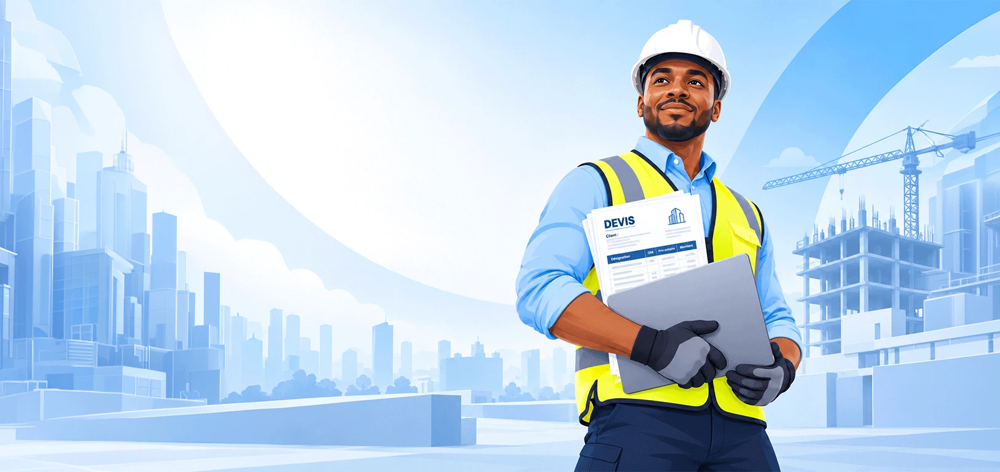

Encore une soirée à chiffrer.
Les mesures sur le téléphone, les prix dans un cahier, les calculs dans Excel. Tout rassembler prend déjà du temps.
Vos ouvrages et vos prix, au même endroit.

CHIFFRAGE & DEVIS POUR LA CONSTRUCTION BTP
Gros œuvre, second œuvre, rénovation : chiffrez vos travaux poste par poste, à partir de vos métrés. Matériaux, main-d’œuvre, marge : gardez la main sur votre prix et préparez un devis prêt à envoyer.
14 jours d’essai · 3 devis · Sans carte bancaire
ÇA VOUS PARLE ?
Il reste ce devis à terminer. Ces prix à retrouver.
Et cette question : « Est-ce que j’ai bien tout compté ? »
Les mesures sur le téléphone, les prix dans un cahier, les calculs dans Excel. Tout rassembler prend déjà du temps.
Des matériaux oubliés, des pertes sous-estimées, la main-d’œuvre mal comptée. Ce qui manque dans le devis sort de votre poche.
Le client veut plus large, plus haut, un autre matériau. Vous reprenez les quantités et les montants, ligne après ligne.
DES DIMENSIONS AU BON PRIX
De la maçonnerie aux finitions, rassemblez les ouvrages de vos différents lots dans un même devis. ikadevis calcule chaque poste à partir de vos métrés et de vos prix.
Ajoutez vos ouvrages de gros œuvre et de second œuvre, puis renseignez leurs dimensions.
Matières, pertes, main-d’œuvre, frais : vous voyez ce qui compose votre prix.
Générez un PDF avec votre identité. Le devis accepté peut ensuite devenir une facture.
ESSAYEZ LE PRINCIPE
Prenez un mur à construire, puis faites varier sa surface. Le coût des matériaux et de la main-d’œuvre se recalcule. Le même principe s’applique aux autres ouvrages.
Simulation simplifiée, à titre d’illustration.
Dans ikadevis, vous définissez vos composants, vos formules et vos prix.
Prix illustratifs · TVA non incluse · Coût ÷ (1 − 25 %)
LA CONSTRUCTION BTP AU CŒUR
Construction neuve, extension, rénovation :
retrouvez le détail de vos coûts à chaque étape du chantier.
CONSTRUCTION NEUVE & RÉNOVATION
Maçonnerie, béton, enduits, carrelage, peinture : rassemblez vos ouvrages dans un même devis. Détaillez les matériaux et la main-d’œuvre pour comprendre ce que chaque poste vous coûte.
Le même principe de chiffrage pour vos ouvrages spécialisés.
Portails, grilles, garde-corps : comptez les profilés, les tôles, les accessoires, la fabrication et la pose.
Voir l’exemple métalleriePortes, placards, agencements : retrouvez vos panneaux, votre quincaillerie et vos coûts de finition dans le même ouvrage.
Voir l’exemple menuiseriePanneaux composites, ossature, fixations, pertes de découpe et pose : construisez un prix au-delà de la seule surface.
Voir l’exemple façadeMaçonnerie, peinture, carrelage, menuiserie, signalétique… Un même outil pour les ouvrages qui composent votre chantier.
LE PROCHAIN DEVIS SERA PLUS SIMPLE
Enregistrez vos matériaux, votre main-d’œuvre et vos solutions techniques. Pour le prochain client, reprenez l’ouvrage, ajustez les mesures et vérifiez vos prix.
COMMENCEZ AVEC UN VRAI OUVRAGE
Testez votre façon de chiffrer avant de choisir votre abonnement.
Starter
pendant 14 jours
Standard
par mois
Entreprise
par mois
L’essai démarre à la création de votre compte. Vous choisissez ensuite l’offre qui vous convient.
AVANT DE VOUS LANCER
Un besoin particulier pour votre métier ?
Parlons de vos ouvragesVous regroupez vos matériaux, vos coûts de main-d’œuvre et vos ouvrages dans un catalogue réutilisable. Les quantités se recalculent à partir des dimensions et des formules que vous avez définies. Vous préparez ensuite le devis PDF dans le même outil.
Oui. Vous renseignez vos prix de matériaux, vos tarifs de main-d’œuvre, vos pertes, vos frais et votre marge. Les exemples du catalogue sont des points de départ : vérifiez et adaptez leurs composants et leurs prix à votre entreprise.
Vous pouvez commencer avec un ouvrage du catalogue, vérifier sa composition et renseigner les dimensions demandées. Pour un ouvrage spécifique, les quantités dépendent des formules et paramètres de votre solution technique. Vous gardez la possibilité de contrôler le détail du calcul.
L’offre Starter permet d’essayer ikadevis pendant 14 jours avec jusqu’à 3 devis, 1 projet et 1 utilisateur. Vous pouvez explorer le catalogue, les calculs et l’export PDF standard. Aucune carte bancaire n’est demandée pour démarrer.
Oui, ikadevis est accessible depuis un navigateur sur téléphone, tablette ou ordinateur. Vous pouvez consulter vos devis et renseigner vos mesures sur le chantier. Prévoyez une connexion Internet pour accéder à votre compte et synchroniser votre travail.
Vous pouvez convertir le devis accepté en facture et générer le document PDF. Votre chiffrage reste associé au projet, pour retrouver les informations sans tout ressaisir.
PLUS DE TEMPS POUR VOS CHANTIERS
Prenez un ouvrage que vous connaissez.
Entrez vos dimensions. Vérifiez vos coûts. Voyez la différence.